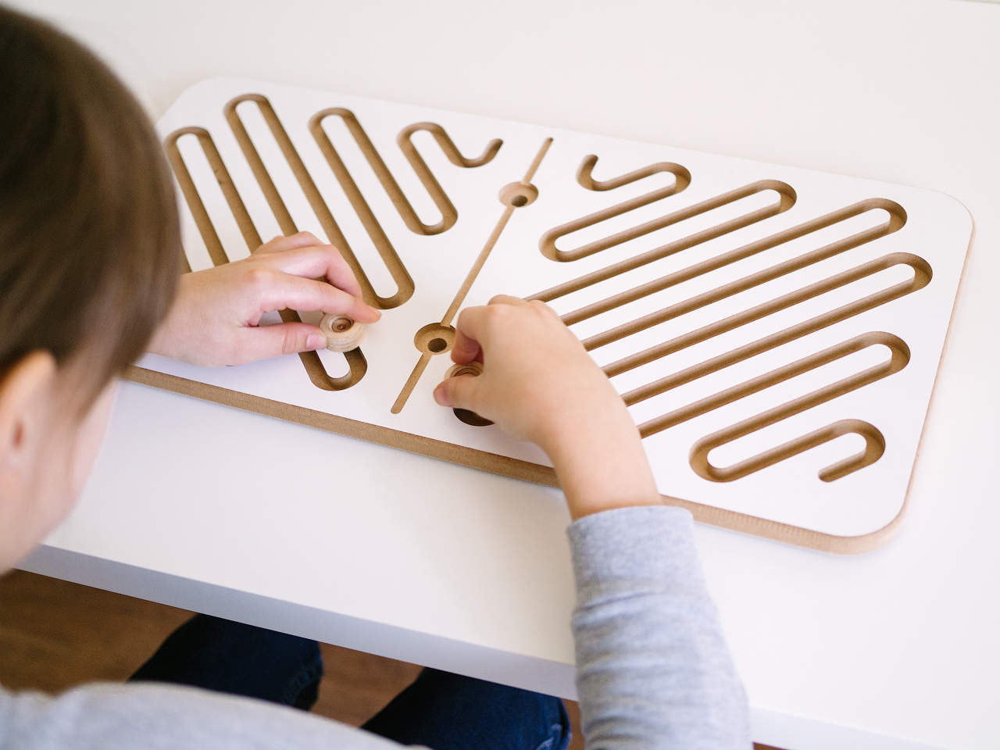

Когда стоит обратиться к нейропсихологу?

Иногда ребенок очень старается, но учеба, внимание или поведение все равно вызывают сложности. Это не всегда связано с ленью, характером или «плохим воспитанием».
Часто причина кроется в особенностях работы нервной системы, которые можно скорректировать с помощью нейропсихологического подхода.
Нейропсихологическая диагностика помогает увидеть сильные стороны ребенка и понять, какие навыки еще нуждаются в поддержке и развитии.
Главная задача нейропсихолога — не искать «болезни», а помочь ребенку легче справляться с повседневными трудностями и чувствовать себя увереннее.
На что стоит обратить внимание?
Некоторые особенности могут быть возрастной нормой, но если трудности сохраняются длительное время или мешают ребенку в учебе и повседневной жизни, стоит обратиться за консультацией.
Учебные трудности
-
«Глупые» ошибки при письме
-
Зеркальное написание букв и цифр
-
Угадывающее чтение
-
Сложности с пониманием прочитанного
-
Быстрая потеря внимания во время занятий
-
Трудности с запоминанием информации
Особенности поведения
-
Импульсивность
-
Повышенная утомляемость
-
Трудности с соблюдением правил
-
Эмоциональная незрелость
-
Сложности с организацией деятельности
-
Быстрое истощение во время занятий
Двигательные и физиологические признаки
-
Неуклюжесть
-
Ходьба на цыпочках
-
Трудности с координацией движений
-
Энурез
-
Скрежет зубами во сне
-
Несформированная ведущая рука после 5–6 лет
Что еще может говорить о перегрузке нервной системы?
-
Синкинезии (например, язык «помогает» при письме)
-
Сильная истощаемость
-
Частые болезни
-
Метеочувствительность
-
Трудности с переключением между задачами
Если вы замечаете у ребенка несколько подобных особенностей — это не повод для тревоги или чувства вины. Это повод вовремя помочь.
Почему важно обратиться вовремя?
Детский мозг обладает высокой пластичностью. Правильно подобранные сенсомоторные упражнения помогают сформировать и укрепить необходимые нейронные связи.
Чем раньше родители понимают причину трудностей ребенка, тем легче и эффективнее проходит коррекционная работа.
Главная цель нейропсихологической помощи — не «исправить» ребенка, а помочь ему чувствовать себя спокойнее, увереннее и успешнее в учебе, общении и повседневной жизни.